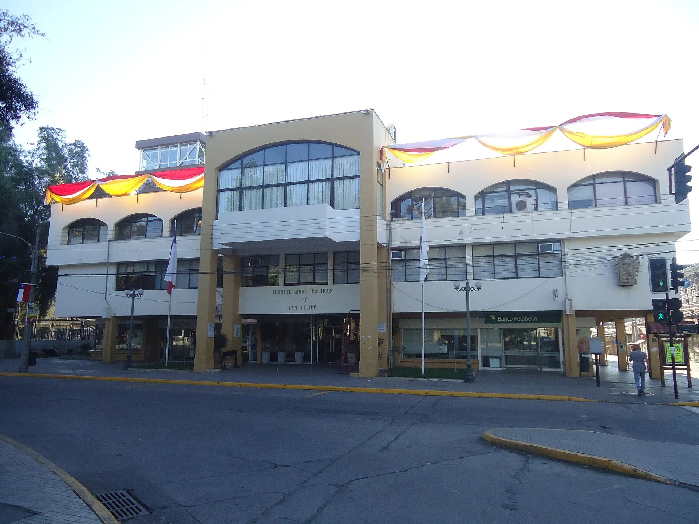
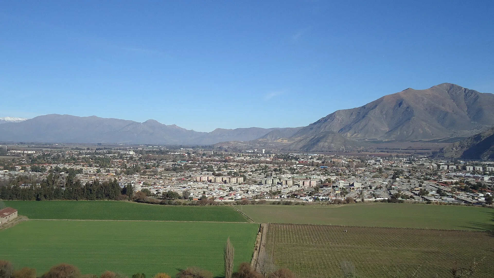
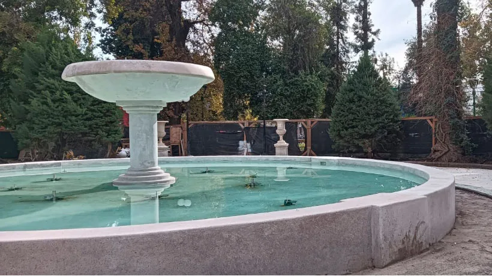
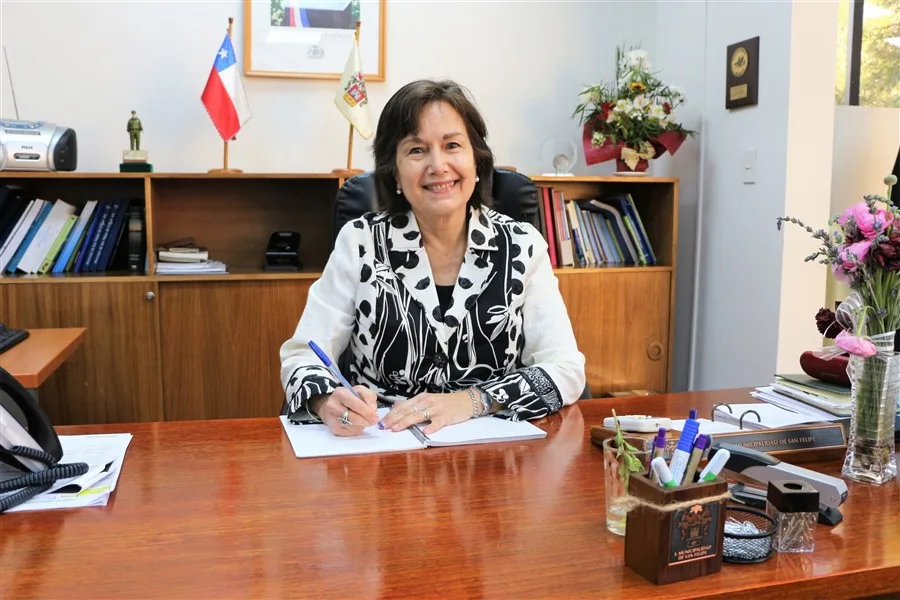

DIDECO
Desarrollo Comunitario
Directora: Sonia Mancilla Campos
Dirección: Avenida Maipú 376, San Felipe
Teléfono: 342 50 90 15
Nuestra institución
La Municipalidad de San Felipe trabaja por el desarrollo y el bienestar de la comunidad.
Conocer nuestra historiaIlustre Municipalidad de San Felipe
Capital de la provincia de San Felipe de Aconcagua, Región de Valparaíso.
La Ilustre Municipalidad de San Felipe es la institución encargada de administrar la comuna y entregar servicios a sus vecinas y vecinos. Su sede principal se encuentra en Calle Salinas 1211, en el centro de la ciudad, y su gestión está encabezada por la alcaldesa Carmen Castillo Taucher.
La comuna se ubica en el valle de Aconcagua y es capital de la provincia homónima. Su casco histórico conserva edificios patrimoniales, plazas y alamedas, mientras que su economía integra agricultura, comercio, servicios y turismo.

Nuestra historia
San Felipe fue fundada el 3 de agosto de 1740 por José Antonio Manso de Velasco, Conde de Superunda, con el nombre de San Felipe el Real. En 1770 el rey Carlos le otorgó el título de ciudad y, en 1813, tras la victoria de las fuerzas sanfelipeñas sobre la sublevación realista de Los Andes, recibió el título de Ciudad Heroica.
Posteriormente, la Junta de Gobierno ratificó y amplió ese reconocimiento con el nombre de Siempre Heroica Ciudad de San Felipe de Aconcagua. Durante el siglo XIX la ciudad se consolidó como capital provincial y, en el siglo XX, la instalación de empresas frutícolas y conserveras impulsó su desarrollo económico.



Nuestra alcaldesa
Carmen Castillo Taucher es médico cirujana y magíster en Salud Pública con mención en Epidemiología de la Universidad de Chile. Inició su carrera como servidora pública en 1980 en el Hospital Luis Gajardo Guerrero y se desempeñó durante décadas en la red de salud de Aconcagua.
Fue Ministra de Salud entre 2016 y 2018 y asumió como alcaldesa de San Felipe en 2021. Su gestión comunal se organiza a través de las direcciones, oficinas y programas municipales que atienden las necesidades de la comunidad.

Atención a la comunidad
Principales oficinas y servicios de atención al público.
DIDECO
Directora: Sonia Mancilla Campos
Dirección: Avenida Maipú 376, San Felipe
Teléfono: 342 50 90 15
Justicia local
Juez: Jaime Lepe Fernández
Dirección: Avenida Maipú 1142, San Felipe
Teléfono: 342 50 90 00
Salud municipal
Directora: Carolina González Bruna
Dirección: Avenida Miraflores 1389, San Felipe
Información institucional